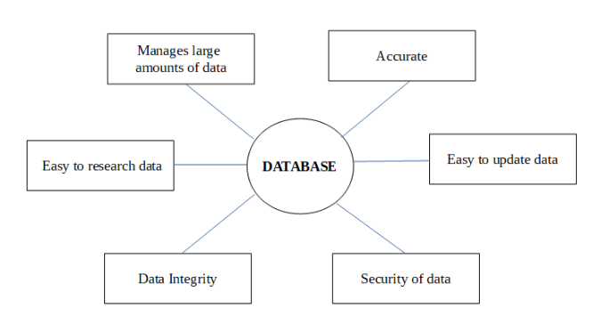
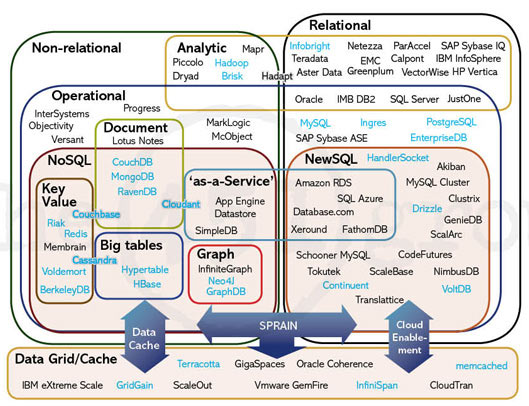
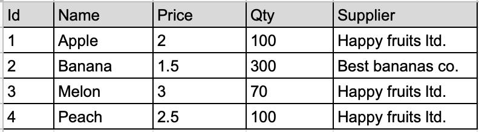
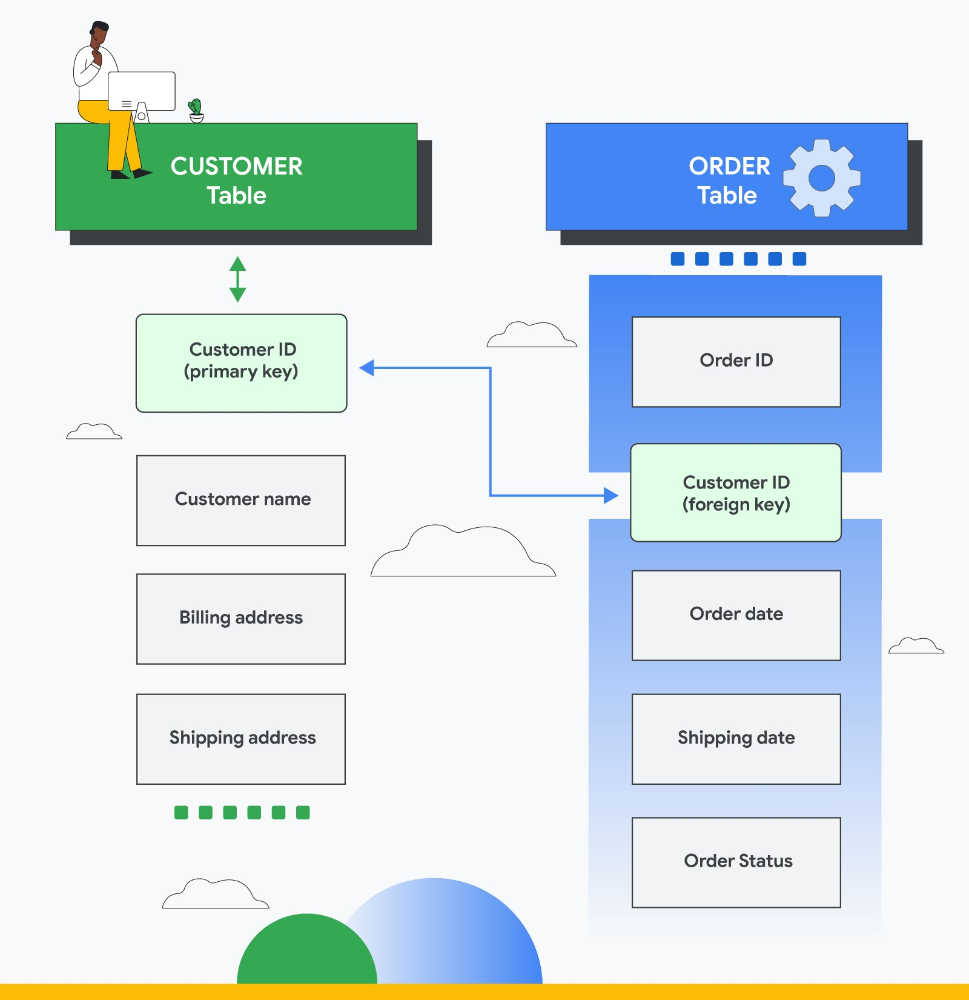
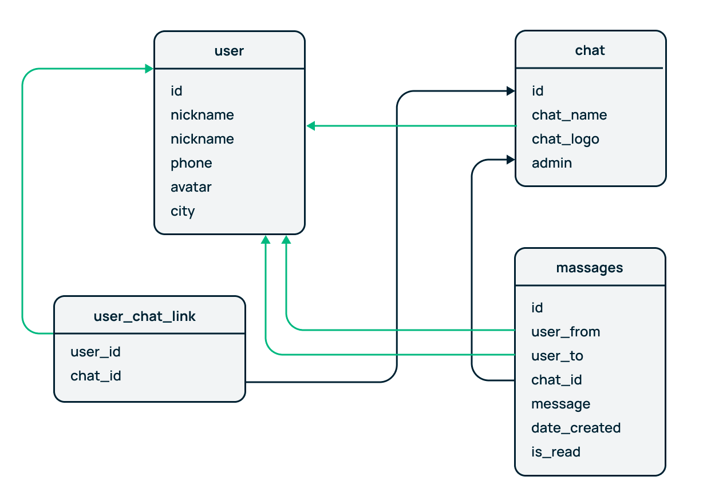
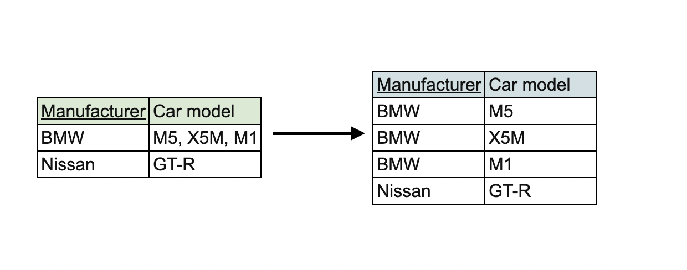
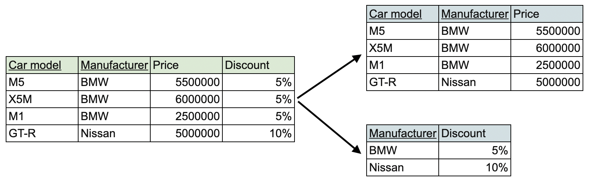
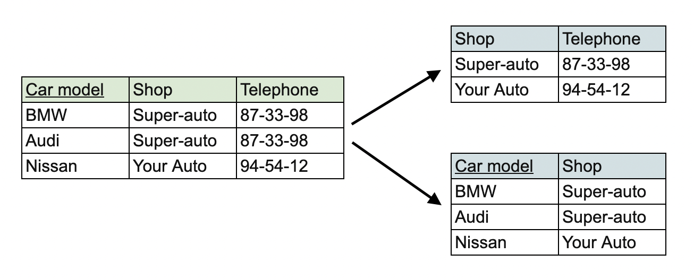

SQL databases
(PostgreSQL)

Why use database?

How many types of database are there?

Relational database
- A relational database is a database based on the relational model of data.
- RDBMS - relational database management system
- SQL - Structured Query Language
Table as a basis

- Row (tuple, record) - a data set representing a single item
- Column (attribute, field) - a labeled element of a tuple, e.g. "Name" or "Price"
- Table (relation, base relvar) - set of columns and rows
- View (result set, derived relvar) - a set of tuples; a data report from the RDBMS in response to a query
Relations between tables

- Primary key (tuple, record) - a data set representing a single item
- Foreign key (attribute, field) - a labeled element of a tuple, e.g. "Name" or "Price"
Relations between tables

- One to one
- One to many
- Many to many
Normal forms
- Database normalization is the process of organizing the attributes of the database to reduce or eliminate data redundancy (having the same data but at different places).
Normal forms
- First normal form - relation should not contain composite or multi-valued attribute.

Normal forms
- Second normal form - 1NF + relation must not contain any partial dependency.

Normal forms
- Third normal form - 2NF + relation must not contain any transitive dependency.

SQL
Structured Query Language
- Developed by IBM in 70's
- Declarative
- Accessing many records with single command
SQL data types
- Predefined data types
- Char
- Numeric
- Binary
- Date/Time/Interval
- Boolean
- XML
- JSON
- Constructed types
- Array
- Multiset
- Reference
- User type - comparable to classes in OOP
SQL main operators
-
Data Definition
- CREATE
- ALTER
- DROP
-
Data Manipulation
- SELECT
- INSERT
- UPDATE
- DELETE
-
Data Control
- GRANT
- REVOKE
- DENY
-
Transaction Control
- COMMIT
- ROLLBACK
- SAVEPOINT
PostgreSQL
- Free and open-source
- Multiplatform
- One of the most popular open-source RDBMS
Main commands
Query data from the table
SELECT attrSELECT attr
FROM table_nameSELECT *
FROM table_name
SELECT attr1, attr2, attr3
FROM table_name
SELECT attr
FROM table_name
ORDER BY expression [ASC | DESC]
Query with filtering
SELECT first_name
FROM customers
WHERE first_name = 'John'SELECT first_name
FROM customers
WHERE first_name = 'John' AND
last_name = 'Brown'SELECT first_name
FROM customers
WHERE first_name IN ('Ann','Anne','Annie');SELECT first_name
FROM customers
WHERE first_name LIKE 'Ann%';SELECT first_name
FROM customers
WHERE first_name LIKE 'A%' AND
LENGTH(first_name) BETWEEN 3 AND 5Query with limiting
SELECT first_name
FROM customers
WHERE first_name LIKE 'A%' AND
LENGTH(first_name) BETWEEN 3 AND 5
LIMIT 5Links
- https://www.postgresql.org/docs/ - official documentation
- https://postgrespro.ru/docs/postgresql/14/index - документация на русском
- https://www.postgresqltutorial.com/ - good tutorial for a quick start
- https://www.geeksforgeeks.org/normal-forms-in-dbms/ - about normal forms
- https://habr.com/ru/post/254773/ - про нормализацию на русском.